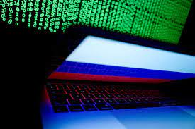
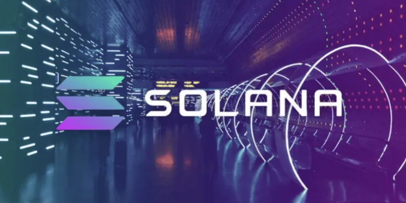
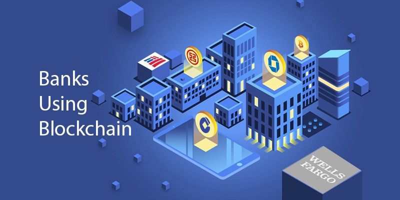

Qu'est ce que la veille technologique ?
Une veille est une activité consistant à rester informé des
dernières avancées et informations sur un secteur donné.
Pour réaliser une bonne veille technologique il faut que les
quatre points suivants soient bien respectés :
• Choisir un ou plusieurs thèmes.
• Comment collecter les infos ?
• Comment trier les infos ?
• Comment exploiter et diffuser les infos ?
Ce processus peut être mis en place via des flux RSS, plus
précisément une technologie qui détecte les dernières nouveautés
ajoutées dans un site Internet et permet d'être avisé dès qu'ils
sont mis à jour par le biais d'un fichier XML.
Outils utilisés
Feedly
Feedly est un agrégateur de flux RSS utilisé par de nombreuses
personnes. Il permet d'organiser sa veille à l'aide de plusieurs
fonctionnalités d'organisation et de tri afin d'identifier les
informations les plus intéressantes.
Google Alerts
Google alerts est un outil permettant de récupérer les adresses
des nouveaux articles, blogs publiés sur internet. Chaque jour,
un récapitulatif est envoyé par email contenant les objets
récupérés par l'outil.
Cybersécurité
Seulement 64% des entreprises françaises peuvent détecter et répondre à un incident en moins de 24h
Cybersécurité : le stress des salariés augmente le risque de cyberattaques
L'Anssi livre ses recommandations de cyberprotection dans le cadre du conflit ukrainien
L'Ukraine affirme que son "armée informatique" a mis hors service des sites Web clés de la Russie, Ce qui montre que la ligne de front cybernétique entre les deux pays s'intensifie
74 % des revenus des ransomwares en 2021 auraient été versés à des pirates informatiques prétendument affiliés à la Russie, Selon un rapport de Chainalysis
Blockchain
Quelle blockchain choisir pour développer vos applications ?
Le lancement de la nouvelle blockchain Terra se rapproche, avec le soutien de nombreux exchanges
La blockchain Solana hors ligne plusieurs heures, la faute à des millions de transactions
L’Arabie Saoudite capitale de la crypto ? Le gouvernement réfléchit à des infrastructures blockchain
Quels impacts de la blockchain sur les banques ?
Blockchain et assurances